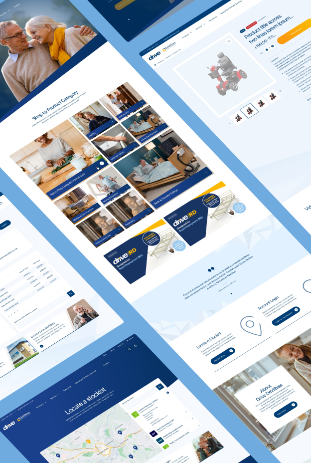
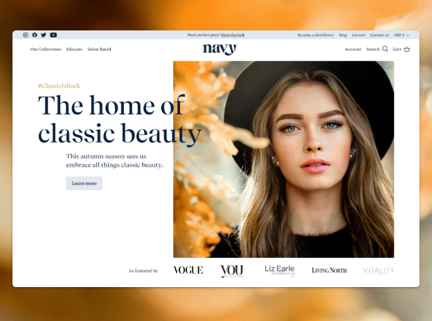
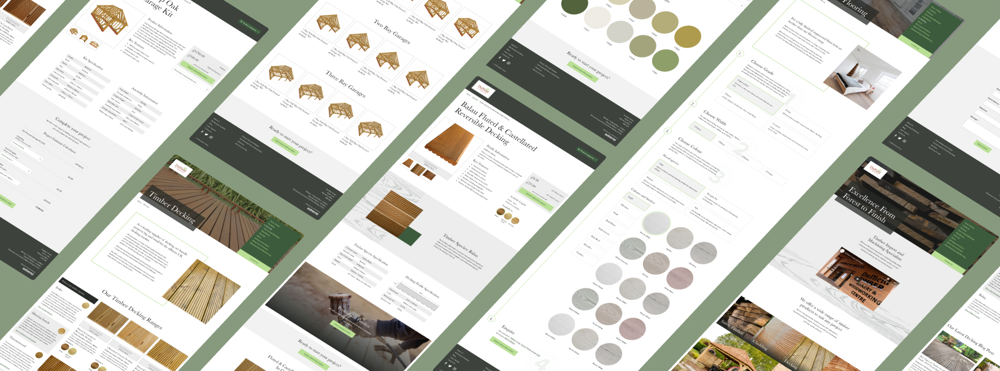
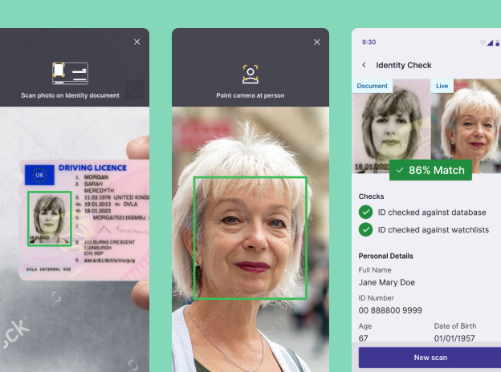
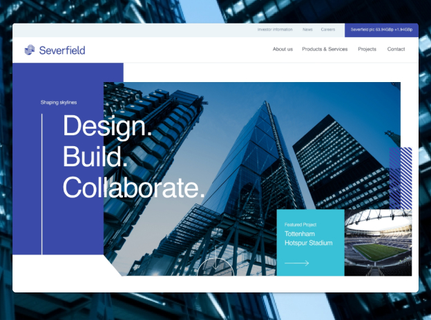
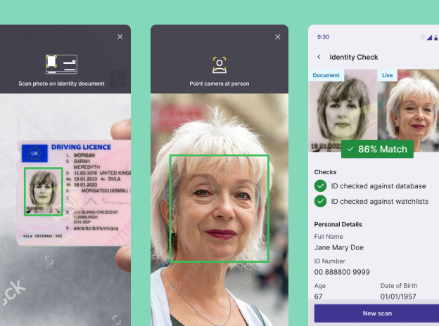
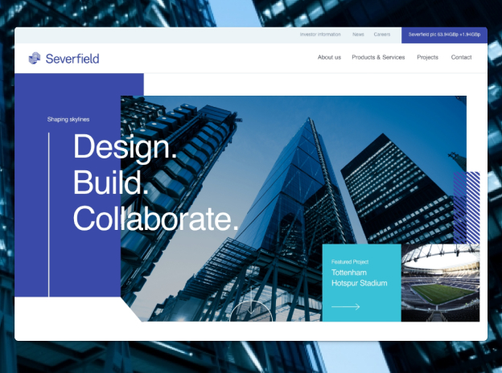
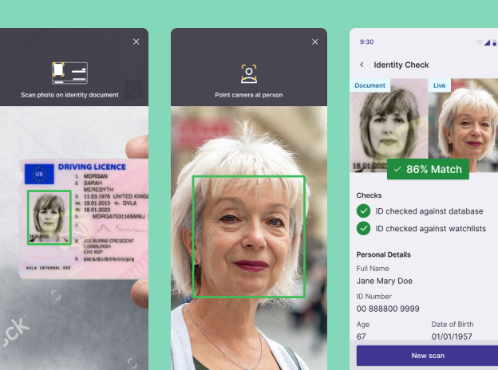
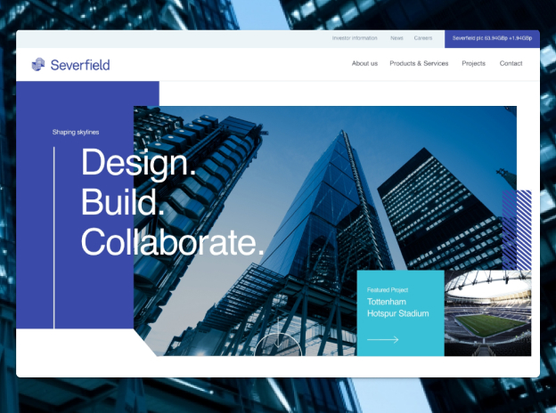

Hi, I'm Andy
A T-shaped designer and strategist with over 12 years experience in crafting digital products and services.
From big brands to zero-to-one startups, I’ve worked with clients across multiple industries in both public and private sector.


Case study: Designing for scale with a robust design system
How I designed the MVP of a highly-configurable Case Management System with a focus on reusability and rapid scalability.
View case study
Portfolio: User-centred design that delivers results



 





Case study: Website redesign that sent sales souring
How I delivered a complete new strategy and redesign that resulted in a huge increase in sales leads and online revenue.
View case studyGet in touch
To learn more about my experience or to get in contact, please reach out on LinkedIn.
View LinkedIn profile